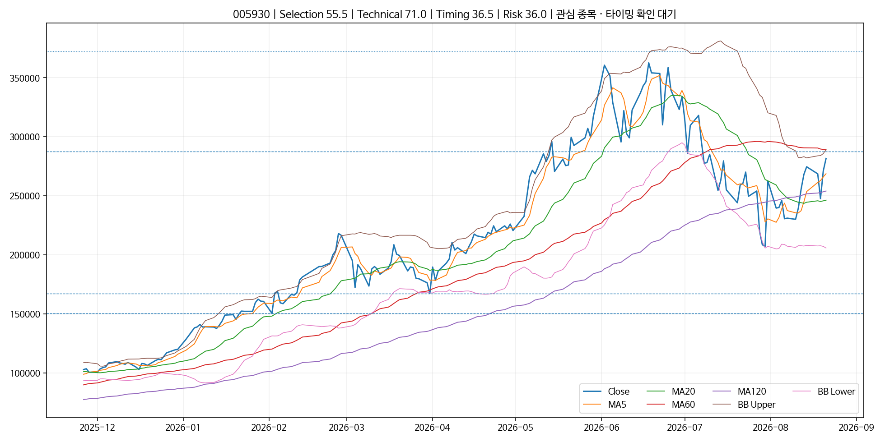

| 단계 | 비중 | 확인 조건 | 현재 |
|---|---|---|---|
| 1차 | 30% | 초기 구조·타이밍 확인 | 대기 |
| 2차 | 20% | 골든크로스 또는 정배열 강화 | 대기 |
| 3차 | 15% | 저항·넥라인 거래량 돌파 | 대기 |
| 4차 | 10% | 돌파 후 눌림목 지지 확인 | 대기 |
| 5차 | 10% | 재돌파/상승추세 지속 확인 | 대기 |

| 범주 | 신호 | 점수 | 근거 |
|---|---|---|---|
| trend | 추세·이평선 | +10.0 | 일봉배열=mixed, 주봉배열=mixed, 20일선 위=True, 상승구조=True, 교차=none, 20일 이격=14.3% |
| location | 지지·저항 위치 | -2.0 | 최근 지지=167150.0, 최근 저항=287500.0, 돌파=None, 지지이탈=None, 저항→지지=None |
| candle | 캔들 | +0.0 | 특이 캔들 없음 |
| volume | 거래량 확인 | +0.0 | 중립 |
| structure | 시장 구조 | +3.0 | 저점 상승 |
| pattern | 패턴 | +0.0 | 뚜렷한 패턴 없음 |
| bollinger | 볼린저밴드 | +0.0 | 중립 |
본 결과는 강의 내용을 정량화한 기술적 분석 도구이며 투자자문·수익 보장이 아닙니다. 기업·산업·매크로 분석과 별도 포지션 관리가 필요합니다.